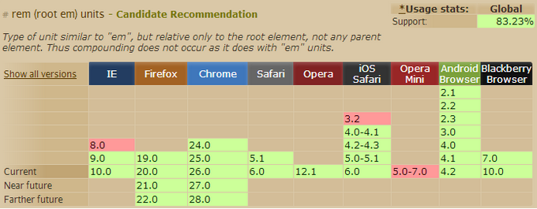

响应式布局-Rem的用法
前言： 文章较为系统地介绍了rem这个新的文字大小单位，绝对干货，绝对好文。转载时略有改动。
先来看看一些基本理念，比如：
响应式网页不仅仅是响应不同类型的设备，而且需要响应不同的用户需求。响应式的初衷是为了让信息更好的传递交流，让所有人无障碍的获取信息，同时这也是 Web 的初衷。
同样的，响应式的设计应该秉承「内容优先，移动优先」的设计原则，那么我们知道网页中的内容主要是由文字图片等元素组成的，那么文字该如何响应式呢？
当我们每天面对缤纷的互联网世界的时候，文字不仅仅传递给我们众多的信息资讯，而且在设计师的手里，文字在网页中的排版承载着一种艺术的直觉。
网页中常用的文字大小单位是 px(Pixels)，em，现在《CSS Values and Units Module Level 3》中新增了 rem 这个单位。
那到底什么是 rem 呢？
「rem」是指根元素（root element，html）的字体大小，好开心的是，从遥远的 IE6 到版本帝 Chrome 他们都约好了，根元素默认的 font-size 都是 16px。这样一个新的单位兼容性如何呢?

太好了，IE9+，Firefox、Chrome、Safari、Opera 的主流版本都支持了，我可以放肆的使用 rem 了。
可是，W3C 那些家伙为什么要闲着下面疼的新增这样一个单位呢？它和 em 有啥区别呢？
我们知道 em 的计算是基于父级元素的，在实际使用中给我们的计算带来了很大的不便。所以 rem 的出现解救了我这样不会算术的人，再也不用担心父级元素的 font-size 了，因为它始终是基于根元素（html） 的。
比如默认的 html font-size=16px，那么我想设置12px 的文字就是：12÷16=0.75（rem）
当然，你可以引入 CSS 预处理工具（Sass、LESS 、Stylus等）自动计算 rem 值，这里就不一一举例了。
但是像我这样的懒人或者团队开发中还没有引入CSS 预处理工具的该肿么办呢？只能搬个计算器啪啪啪了吗？别急，你还可以变通一下。我们改变一下 html 的默认 font-size=10px 不就好计算了嘛！Like this：
需要注意的是，为了兼容不支持 rem 的浏览器，我们需要在 rem 前面写上对应的 px 值，这样不支持的浏览器可以优雅降级。其实不用太纠结是默认的 font-size:100%，还是设置为 font-size:62.5%，如果你引入了 CSS 预处理工具那么自然可以使用默认值，如果由于其他原因使用 font-size:62.5% 也无可厚非，完全可以在 body 中重置回你需要的默认 font-size。